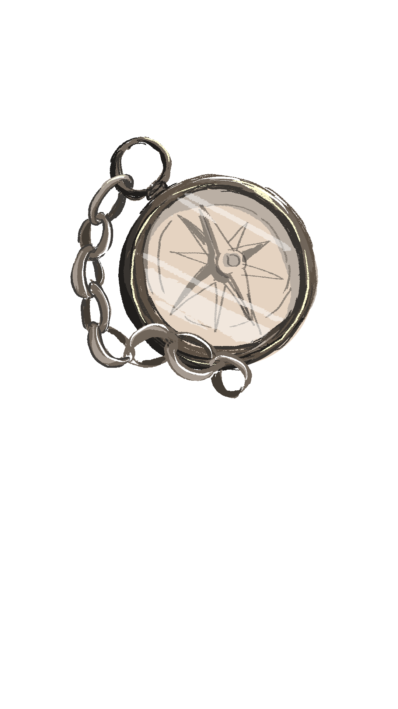

時空遺珠
VOC 府城撤離行動
開啟觀測設備
場景：2F 入口「大員港口」
系統
（螢幕出現強烈雜訊...）
▼
場景：「山海之間的共存與競逐」
導航員 · 漢斯
「長官！手機搖晃後偵測到強烈的貿易能量！這裡有濃厚的農耕氣息，傳聞附近有一位跟隨『農民朋友』的夥伴，他擁有最快的渡水船。我們去尋找並拍攝『水牛』吧！」
▼
場景：開啟觀測設備中...
系統提示
「請將相機對準展區對應的『水牛時空痕跡（QR Code）』進行掃描。」
🛑 關閉觀測設備
場景：水牛腳邊的草叢
搬運工 · 皮特
「嘿！我正載著這批要出口的稻米呢！多虧長官找到這頭大水牛，不然我差點在泥沼裡迷路了。這枚銀幣也一併交給您吧！」
▼
場景：「新秩序下的苦悶與夢想」
搬運工 · 皮特
「長官，這裡氣氛變得很嚴肅，到處都是巨大的巡警。我們需要新的夥伴來偽裝！根據提示：去尋找能留下瞬間記憶的黑盒子吧！」
▼
場景：開啟觀測設備中...
系統提示
「請將相機對準展區對應的『老相機時空痕跡（QR Code）』進行掃描。」
🛑 關閉觀測設備
場景：「新秩序下」展區
情報員 · 安娜
「噓！小聲點。現在是文明開發的年代，規矩多得很。我剛剛從照向館偷到了這批『化學感光劑』，這可是高價的貿易品。但要拿走最後一枚銀幣，你們得幫我解開這段被查禁的文字。」
▼
場景：特定文字看板前
【歷史空白處解密】
安娜指著看板上的殘缺句子：
「大正十年的＿＿＿＿＿運動，是台灣人爭取權利的開端。」
(臨時測試謎題：蘋果是什麼顏色？)
彩色
紅色
場景：歷史的真相拼湊完成

情報員 · 安娜
「做得好！長官，歷史的真相已經拼湊完成。最後一枚銀幣拿去吧！時空座標設定完畢，點擊上方的時空裝置，我們的撤離船即將抵達！」
場景：2F 廊道盡頭 (走向民主之路)
眾人
「感謝您，指揮官。這趟從 17 世紀跨越到 20 世紀的旅程，讓我們見證了這座島嶼的韌性。期待在未來的歷史中與您再次相遇。」
▼
再見，大員
時空門已關閉
畫面變回臺史博的現代全景。
感謝參與本次測試！
重新開始行動
🎉 尋獲目標！
解鎖後續對話